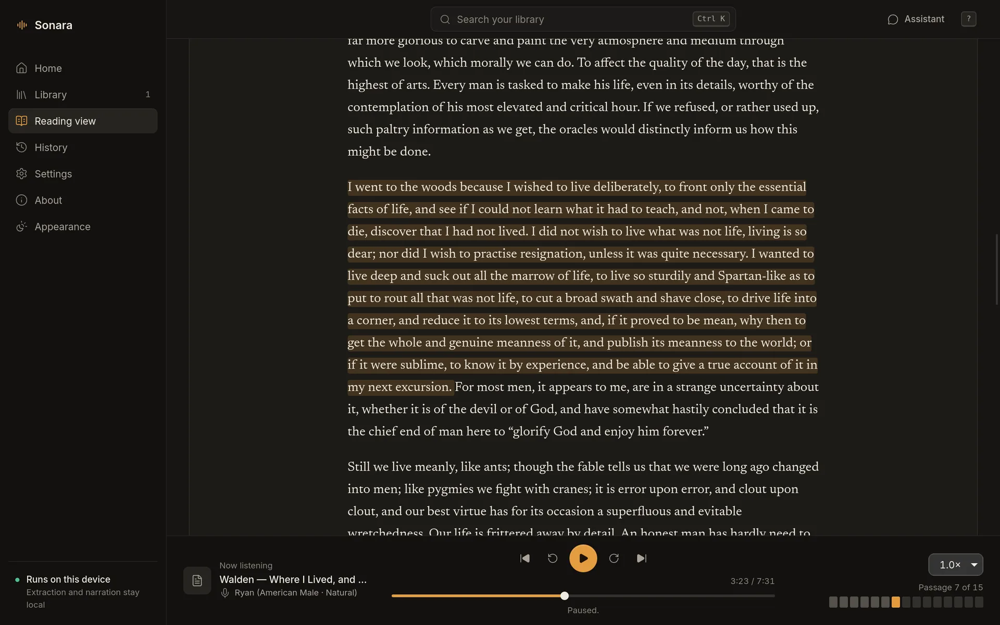
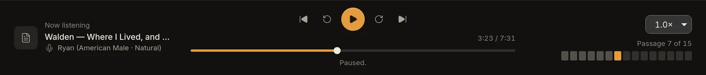

Bring the formats you use
PDF, EPUB, DOCX, Markdown and plain text. Scanned PDFs are read with OCR, which ships with the app. Complex layouts can still extract imperfectly.
Sonara narrates PDFs, e-books, Word files and notes with a voice that runs on your machine, and highlights each passage as it reads.
Checking the latest release

Reports, research, books and notes do not always fit into a quiet hour with a screen. Sonara gives those documents a spoken form you can follow, pause and come back to.
It is a desktop reader built around the source document and its narration, not a new library to fill or a service that needs your files.
PDF, EPUB, DOCX, Markdown and plain text. Scanned PDFs are read with OCR, which ships with the app. Complex layouts can still extract imperfectly.
Download Piper voices or Kokoro from Settings. Each file comes from a fixed upstream release and is checked against a pinned SHA-256 hash before Sonara uses it.
The reading view highlights the passage being spoken. Play, pause, seek, change speed from 0.7× to 1.5×, and start from any paragraph. Sonara remembers where you stopped.
Preview the spoken-text layer before synthesis. Supported abbreviation and measurement expansions do not rewrite the source document.
The document assistant is separate from reading and speech. Its provider is configured on its own and may be local or remote.
Sonara extracts text on your computer, then prepares speech with a local voice. Some complex layouts may need a closer look.
Scanned PDFs are read with Tesseract OCR, included in the installers.
Four steps, each one close to the document and the controls you need.
Open a supported file with your system’s file picker.
Pick a Piper or Kokoro voice you downloaded in Settings.
Sonara extracts the text and synthesizes it passage by passage on your computer.
Follow the highlighted passage, and pick up where you left off next time.
Sonara keeps the original text separate from supported pronunciation and measurement adjustments. Switch the example to see the difference.
This guide covers 5 km/h. See e.g. the opening note.
This guide covers five kilometers per hour. See for example the opening note.
Example only. Your source document stays unchanged.
Speech engines create the audio. Language models only power the separate assistant.
Included in the app. Four American English voices, about 60 MB each, download from Settings.
Included in the app. Its model and voice files, about 350 MB, download from Settings.
An embedded llama.cpp model, a local Ollama server, or OpenAI and Gemini. None of them is needed to read a document aloud.
Text extraction, OCR, audio generation and playback all run on your computer. Voice models download only when you press Download in Settings, from fixed sources, and are checked before use.
Assistant providers are configured separately. If you choose an external provider and use an assistant feature, relevant document text may be sent to that provider. Review the provider and settings before use.
Read the privacy notesThe player marks every passage of the document, and the current one is lit. Jump to any passage, or click a paragraph in the reading view to listen from there.

A desktop document reader that turns your files into narration on your own computer, with a reading view that highlights the passage being spoken and saves your place.
PDF, EPUB, DOCX, Markdown and plain text. Scanned PDFs are read with the OCR included in the app. Extraction depends on the document’s structure.
Yes, once you have downloaded a voice. Text extraction, OCR and speech run on your computer, and the runtime and tools they need ship inside the installer.
The installers include the Piper and Kokoro engines but no voice files. Four American English Piper voices (Ryan, Lessac, Bryce and John) and Kokoro download from Settings → Speech models.
Not for reading or speech, which run on your computer. Assistant providers are configured separately; an external provider may receive document text when you use its assistant features.
Linux on x86_64 (.deb and AppImage) and macOS on Apple silicon (.dmg). The macOS build is not yet signed, so macOS asks you to approve it in System Settings the first time you open it. Windows builds are not available yet.
Use the download panel at the top of this page, or open the latest GitHub release to see every file, with checksums and a software bill of materials.
Sonara is free and open source under the GPL. Read the release notes, or look through the code.
Open the latest release